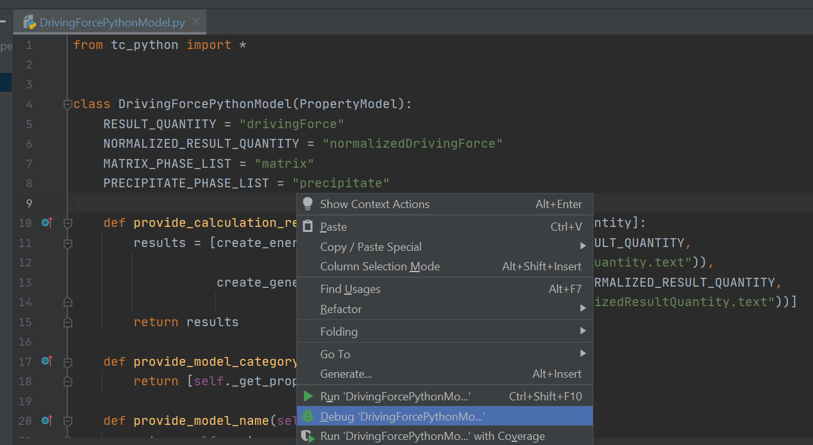

Best Practices¶
Re-use of the single equilibrium calculation state¶
The Thermo-Calc core keeps an internal state containing the data from previously performed calculations (such as composition of sublattices, previously formed phases, …). This will be used for start values of future calculations (if not explicitly overwritten) and can strongly influence their convergence and calculation time. It can be useful to save and restore later the core-state in advanced use cases, these include:
Improving the convergence speed in case of very complicated equilibria if a similar equilibrium had been calculated already before. Similarity refers here primarily to composition, temperature and entered phase set. This case can occur for example with the Nickel-database TCNi.
Convenient and fast switching between states that have changed a lot (for example regarding suspended phases, numerical settings, …)
The mechanism of saving and restoring the state is called bookmarking and is controlled with the two methods
tc_python.single_equilibrium.SingleEquilibriumCalculation.bookmark_state() and
tc_python.single_equilibrium.SingleEquilibriumCalculation.set_state_to_bookmark(). The following short example
demonstrates how to switch between two different states easily in practice:
from tc_python import *
with TCPython() as session:
calc = (session.
select_database_and_elements("FEDEMO", ["Fe", "C"]).
get_system().
with_single_equilibrium_calculation().
set_condition(ThermodynamicQuantity.temperature(), 2000.0).
set_condition("X(C)", 0.01))
calc.calculate()
bookmark_temp_condition = calc.bookmark_state()
calc.set_phase_to_fixed("BCC", 0.5)
calc.remove_condition(ThermodynamicQuantity.temperature())
bookmark_fixed_phase_condition = calc.bookmark_state()
result_temp = calc.set_state_to_bookmark(bookmark_temp_condition)
print("Conditions do contain temperature: {}".format(result_temp.get_conditions()))
# this calculation had already been performed
print("Stable phases (do not contain BCC): {}".format(result_temp.get_stable_phases()))
result_fixed_phase = calc.set_state_to_bookmark(bookmark_fixed_phase_condition)
print("Conditions do not contain temperature: {}".format(result_fixed_phase.get_conditions()))
# this calculation had **not yet** been performed
print("Stable phases (do contain BCC): {}".format(calc.calculate().get_stable_phases()))
Re-use and saving of results¶
Before a calculation is run in TC-Python, a check is made to see if the exact same calculation has run before, and if that is the case, the result from the calculation can be loaded from disk instead of being re-calculated.
This functionality is always enabled within a script running TC-Python, but you can make it work the same way when re-running a script, or even when running a completely different script.
To use results from previous calculations, set a folder where TC-Python saves results, and looks for previous results.
This is controlled by the method tc_python.server.SetUp.set_cache_folder().
from tc_python import *
with TCPython() as start:
start.set_cache_folder("cache")
This folder can be a network folder and shared by many users. The calculation is not re-run if there is a previous TC-Python calculation with the same cache folder and exactly the same settings; the result is instead loaded from disk.
Another possibility is to explicitly save the result to disk and reload it later:
from tc_python import *
with TCPython() as start:
# ... the system and calculator are set up and the calculation is performed
result = calculator.calculate()
result.save_to_disk("./result_dir")
You can then load the result again in another session:
from tc_python import *
with TCPython() as start:
result = SetUp().load_result_from_disk().diffusion("./result_dir")
x, frac = result.get_mole_fraction_of_component_at_time("Cr", 1000.0)
All TC-Python objects are non-copyable¶
Never create a copy of an instance of a class in TC-Python, neither by using the Python built-in function
deepcopy() nor in any other way. All classes in TC-Python are proxies for classes in the underlying calculation
server and normally hold references to result files. A copied class object in Python would consequently point to the
same classes and result files in the calculation server.
Instead of making a copy, always create a new instance:
from tc_python import *
with TCPython() as start:
system = start.select_database_and_elements("FEDEMO", ["Fe", "Cr"]).get_system()
calculator = system.with_single_equilibrium_calculation()
# *do not* copy the `calculator` object, create another one instead
calculator_2 = system.with_single_equilibrium_calculation()
# now you can use both calculators for different calculations ...
Python Virtual Environments¶
A Python installation can have several virtual environments. You can think of a virtual environment as a collection of
third party packages that you have access to in your Python scripts. tc_python is such a package.
To run TC-Python, you need to install it into the same virtual environment as your Python scripts are running in.
If your scripts fail on import tc_python, you need to execute the following command in the terminal of the
same Python environment as your script is running in:
pip install TC_Python-<version>-py3-none-any.whl
If you use the PyCharm IDE, you should do that within the Terminal built into the IDE. This Terminal runs automatically within your actual (virtual) environment.
To prevent confusion, it is recommend in most cases to install TC-Python within your global interpreter, for
example by running the pip install command within your default Anaconda prompt.
Using with TCPython() efficiently¶
Normally you should call with TCPython() only once within each process.
Note
When leaving the with-clause, the Java backend engine process is stopped and all temporary data is deleted. Finally when entering the next with-clause a new Java process is started. This can take several seconds.
If appropriate, it is safe to run with TCPython() in a loop. Due to the time it takes this only makes sense if the calculation time per iteration is longer than a minute.
To prevent calling with TCPython() multiple times and cleaning up temporary data, you can use the following pattern.
Example:
from tc_python import *
# ...
def calculation(calculator):
# you could also pass the `session` or `system` object if more appropriate
calculator.set_condition("W(Cr)", 0.1)
# further configuration ...
result = calculator.calculate()
# ...
result.invalidate() # if the temporary data needs to be cleaned up immediately
if __name__ == '__main__':
with TCPython() as session:
system = session.select_database_and_elements("FEDEMO", ["Fe", "Cr"]).get_system()
calculator = system.with_single_equilibrium_calculation()
for i in range(50):
calculation(calculator)
Parallel calculations¶
It is possible to perform parallel calculations with TC-Python using multi-processing.
Note
Please note that multi-threading is not suitable for parallelization of computationally intensive tasks in Python. Additionally the Thermo-Calc core is not thread-safe. Using suitable Python-frameworks it is also possible to dispatch the calculations on different computers of a cluster.
A general pattern that can be applied is shown below. This code snippet shows how to perform single equilibrium calculations for different compositions in parallel. In the same way all other calculators of Thermo-Calc can be used or combined. For performance reasons in a real application, probably numpy arrays instead of Python arrays should be used.
Example:
import concurrent.futures
from tc_python import *
def do_perform(parameters):
# this function runs within an own process
with TCPython() as start:
elements = ["Fe", "Cr", "Ni", "C"]
calculation = (start.select_database_and_elements("FEDEMO", elements).
get_system().
with_single_equilibrium_calculation().
set_condition("T", 1100).
set_condition("W(C)", 0.1 / 100).
set_condition("W(Ni)", 2.0 / 100))
phase_fractions = []
cr_contents = range(parameters["cr_min"],
parameters["cr_max"],
parameters["delta_cr"])
for cr in cr_contents:
result = (calculation.
set_condition("W(Cr)", cr / 100).
calculate())
phase_fractions.append(result.get_value_of("NPM(BCC_A2)"))
return phase_fractions
if __name__ == "__main__":
parameters = [
{"index": 0, "cr_min": 10, "cr_max": 15, "delta_cr": 1},
{"index": 1, "cr_min": 15, "cr_max": 20, "delta_cr": 1}
]
bcc_phase_fraction = []
num_processes = 2
with concurrent.futures.ProcessPoolExecutor(num_processes) as executor:
for result_from_process in zip(parameters, executor.map(do_perform, parameters)):
# params can be used to identify the process and its parameters
params, phase_fractions_from_process = result_from_process
bcc_phase_fraction.extend(phase_fractions_from_process)
# use the result in `bcc_phase_fraction`, for example for plotting
Handling crashes of the calculation engine¶
In some cases the Thermo-Calc calculation engine can crash. If batch calculations are performed, this brings down the complete batch. To handle this situation there is an exception you can use.
UnrecoverableCalculationException
That exception is thrown if the calculation server enters a state where no further calculations are possible. You should catch that exception outside of the with TCPython() clause and continue within a new with-clause.
Example:
from tc_python import *
for temperature in range(900, 1100, 10):
try:
with TCPython() as start:
diffusion_result = (
start.
select_thermodynamic_and_kinetic_databases_with_elements("FEDEMO", "MFEDEMO", ["Fe", "Ni"]).
get_system().
with_isothermal_diffusion_calculation().
set_temperature(temperature).
set_simulation_time(108000.0).
add_region(Region("Austenite").
set_width(1E-4).
with_grid(CalculatedGrid.linear().set_no_of_points(50)).
with_composition_profile(CompositionProfile().
add("Ni", ElementProfile.linear(10.0, 50.0))
).
add_phase("FCC_A1")).
calculate())
distance, ni_fraction = diffusion_result.get_mass_fraction_of_component_at_time("Ni", 108000.0)
print(ni_fraction)
except UnrecoverableCalculationException as e:
print('Could not calculate. Continuing with next...')
Using TC-Python within a Jupyter Notebook or the Python console¶
TC-Python can also be used from within an interactive Jupyter Notebook and a Python console as well as similar
products. The main difference from a regular Python program is that it is not recommended to use a with-clause
to manage the TC-Python resources. That is only possible within a single Jupyter Notebook cell. Instead the
standalone functions tc_python.server.start_api_server() and tc_python.server.stop_api_server() should
be used for manually managing the resources.
Note
The resources of TC-Python are primarily the Java-process running on the backend side that performs the actual calculations and the temporary-directory of TC-Python that can grow to a large size over time, especially if precipitation calculations are performed. If a with-clause is used, these resources are automatically cleared after use.
You need to make sure that you execute the two functions tc_python.server.start_api_server()
and tc_python.server.stop_api_server() exactly once within the Jupyter Notebook session.
If not stopping TC-Python, extra Java-processes might be present and the temporary disk-space is not cleared.
However, these issues can be resolved manually.
The temporary directories of TC-Python are named, for example, TC_TMP4747588488953835507 that has a random ID.
The temporary directory on different operating systems varies according to the pattern shown in the table.
Operating system |
Temporary directory |
|---|---|
Windows |
|
MacOS |
|
Linux |
|
In a Jupyter Notebook some features of an IDE such as auto-completion (TAB-key), available method lookup (press . and then TAB) and parameter lookup (set the cursor within the method-parenthesis and press SHIFT + TAB or SHIFT + TAB + TAB for the whole docstring) are also available.
Example using TC-Python with a Jupyter Notebook:
Property Model Framework¶
Debugging Property Model code¶
You can debug property models while running them from Thermo-Calc.
Start Thermo-Calc and create a Property Model calculator.
Select the model you want to debug and check the debug checkbox in the lower right corner of the Python code tab.
Now the model that you want to debug has been updated with code needed to connect with Thermo-Calc.
Start debugging the model in the IDE of your choice.
Note
You must use a Python interpreter where TC-Python is installed.
In PyCharm it looks like this:
Note
When your IDE and Thermo-Calc have sucessfully connected, you will see this in the Thermo-Calc log:
10:34:42,170 INFO Waiting for developer(!) to start Python process in debugger...DrivingForcePythonModel
10:34:42,171 INFO Connected successfully to the Python process for the model 'DrivingForcePythonModel' in DEBUG mode
You can stop the debug session in your IDE, change the model code, and start debugging again.
The changes you made will take effect in Thermo-Calc without the need to restart.
If you for instance changed the method evaluate_model(), the change will take effect the next time you press
Perform.
It is also possible to start the models from TC-Python. The workflow is exactly the same as described above, except instead of starting Thermo-Calc graphical user interface, you start a Python script and use the parameter debug_model=True when selecting your model.
from tc_python import *
with TCPython() as start:
property_model = (
start.
select_database_and_elements("FEDEMO", ["Fe", "C"]).
get_system().
with_property_model_calculation("my own Driving Force", debug_model=True).
set_composition("C", 1.0).
)
property_model.calculate()
...
Developing Property Models in several files¶
You can split your Property Model code in several .py files, and there are two ways of doing that:
side-by-side modules
common modules
Side-by-side modules are Python files located in the same folder as the Property Model.
Common modules are Python files located in a folder outside of the Property Model folder, which makes it possible to share them with several models as a common library.
side-by-side modules¶
You are required to:
Add a
__init__.pyfile to your Property Model folderAdd all imports of side-by-side modules in your main Property Model Python file also to the
__init__.pyfile
Example:
CriticalTemperaturesPythonModel.py (The main Property Model file):
from CriticalTemperaturesPython import CriticalTemperatures
from tc_python import *
import numpy as np
class CriticalTemperaturesPythonModel(PropertyModel):
...
__init__.py:
from CriticalTemperaturesPython.critical_temperatures_library import CriticalTemperatures
If you are using PyCharm, the package name of the Property Model might be highlighted as an error, in this case you can mark the Property Model directory (i.e. the root of the present model directory) by right-clicking on it in the project window of PyCharm and marking it as Sources Root:
critical_temperatures_library.py:
from tc_python import *
import numpy as np
from scipy import optimize
from enum import Enum
class CriticalTemperatures(object):
...
Note
Modules installed in the Python interpreter such as numpy, scipy, etc can be imported as normal. This only concerns files imported as side-by-side modules.
common modules¶
common modules work very similar to side-by-side modules except the import statements are done in the “main”
__init__.py file in Property Model directory.
You are required to:
Add a
__init__.pyfile to your property model folder.Add all imports of common modules in your main property model python file also to both the
__init__.pyfile in Property Model directory AND the__init__.pyof the property model.
Example:
CriticalTemperaturesPythonModel.py (The main Property Model file):
from PropertyModels import Martensite
from tc_python import *
class CriticalTemperaturesPythonModel(PropertyModel):
...
__init__.py: (The init file located in the property model folder)
from PropertyModels import Martensite
__init__.py: (The init file located in Property Model directory)
from PropertyModels.common.martensite_library import Martensite
The file critical_temperatures_library.py should in this example be located in a folder called common
in the Property Model directory.
critical_temperatures_library.py:
from tc_python import *
import numpy as np
from scipy import optimize
from enum import Enum
class CriticalTemperatures(object):
...
Note
common modules must be located in folder called common.
Alternative Python for Property Models¶
Default bundled Python interpreter¶
Thermo-Calc is by default using a Python 3.7.2 interpreter bundled to the software for running the property models. It is containing the following major packages:
Package
Version
matplotlib
3.3.2
numpy
1.19.2
scikit-learn
0.23.2
scipy
1.5.2
TC-Python
2023b
Warning
Any changes to the interpreter packages can therefore break Thermo-Calc and should be avoided. If the installation gets broken, it can be fixed by reinstalling Thermo-Calc after having removed it.
Please contact the Thermo-Calc support if you think that further packages might be useful in future releases. If these packages are insufficient for you, it is possible to use another Python-interpreter: Configuring another Python interpreter.
The interpreter is located in different places depending on the platform:
Operating system
Path to the bundled Python-interpreter
Windows
C:\Program Files\Thermo-Calc\2023b\python\python.exeLinux
/home/UserName/Thermo-Calc/2023b/python/bin/python3MacOS
/Applications/Thermo-Calc-2023b.app/Contents/Resources/python/bin/python3
Configuring another Python interpreter¶
If you require additional Python-packages or prefer to use your own interpreter installed on your system, you can change the interpreter used by Thermo-Calc to run the property models. Select Tools→Options in the Thermo-Calc GUI and modify the path to that of your Python 3 interpreter of choice:

Process Metallurgy Calculations¶
Equilibrium calculations with changing elements between calculations¶
It is possible to add, change or remove additions after performing an equilibrium calculation using
tc_python.process_metallurgy.equilibrium.EquilibriumCalculation.calculate(). This will change the elements
being present in the system if the elements of the additions are differing. The Process Metallurgy Module will handle
this situation by reloading the database with the latest set of elements. While this is an appropriate approach in most
cases, there can be some disadvantages: reloading the database takes some time and the internal engine state
is lost, which may lead to successive calculations failures in some situations.
To avoid the database reload, it is possible to add the respective elements to additions being present in all calculations (with a zero-fraction):
from tc_python import *
with TCPython() as session:
calc = session.with_metallurgy().with_adiabatic_equilibrium_calculation(ProcessDatabase.OXDEMO)
# add the element Al with zero-fraction already
steel = EquilibriumAddition({'Fe': None, 'C': 4, 'Al': 0}, amount=100.0e3, temperature=1700 + 273.15)
slag = EquilibriumAddition({'CaO': 70, 'SiO2': 30}, amount=3.0e3, temperature=1700 + 273.15)
al_addition = EquilibriumAddition({'Al': 100}, amount=1.0e3)
(calc
.add_addition(steel)
.add_addition(slag))
result_1 = calc.calculate()
calc.add_addition(al_addition)
result_2 = calc.calculate()
# evaluate the result as required ...
Or to add a later addition already before the first call to calculate() with a zero amount:
from tc_python import *
with TCPython() as session:
calc = session.with_metallurgy().with_adiabatic_equilibrium_calculation(ProcessDatabase.OXDEMO)
steel = EquilibriumAddition({'Fe': None, 'C': 4}, amount=100.0e3, temperature=1700 + 273.15)
slag = EquilibriumAddition({'CaO': 70, 'SiO2': 30}, amount=3.0e3, temperature=1700 + 273.15)
# add the addition for now with zero-amount
al_addition = EquilibriumAddition({'Al': 100}, amount=0)
(calc
.add_addition(al_addition)
.add_addition(steel)
.add_addition(slag))
result_1 = calc.calculate()
calc.update_addition(al_addition.set_amount(1.0e3))
result_2 = calc.calculate()
# evaluate the result as required ...
Zones¶
TC-Python is providing a framework for building time-dependent kinetic simulations of industrial and academic metallurgical processes where liquid phases are important. It is based on an Effective Equilibrium Reaction Zone (EERZ) approach which is separating a process into different zones. These zones have identical temperature and composition and are called bulk zones. Such zones can be in contact and react with each other by reaction zones. That means a reaction zone is modelling the interface between two bulk zones. One bulk zone is typically the steel melt and another bulk zone the top slag.
Applications¶
While this approach can in principle be extended to any number of zones, in the current release TC-Python is providing only one reaction zone. Practical work has however proven that this limitation is not critical for a lot of industrial processes, including ladle furnaces, AOD- and VOD-converters. Even more processes can be modelled with some limit of accuracy.
The reason for the power of the current implementation is that a number of important process features can be included:
heating (
tc_python.process_metallurgy.process.Zone.add_power())cooling (
tc_python.process_metallurgy.process.Zone.add_power())heat transfer between bulk zones (
tc_python.process_metallurgy.process.ReactionZone.add_heat_transfer())inclusion formation
inclusion flotation and other transfer of phase groups between bulk zones (
tc_python.process_metallurgy.process.ReactionZone.add_transfer_of_phase_group())addition of material and gas at any time in any zone (
tc_python.process_metallurgy.process.Zone.add_addition()/tc_python.process_metallurgy.process.Zone.add_continuous_addition())an exhaust gas zone collecting all formed gas (
tc_python.process_metallurgy.process.ProcessSimulationResult.get_exhaust_gas())time-dependent definition of most parameters (e.g., mass transfer coefficient, transfer of phase group, heating, etc.)
Please note that many of these features are called as well a reaction zone in other EERZ model implementations.
Implementation of practical process models¶
The Process Metallurgy Module has been successfully applied to a number of industrial processes.
Due to the broad range of industrial metallurgical processes, TC-Python is not providing ready-to-use models for certain processes. There are however examples available for common processes and this collection will be extended over time. The implementation of a model is an abstraction of the real process and should always be kept as simple as possible. Practical experience has proven that in many situations not more than one reaction zone is required.
The mass transfer coefficient is a fundamental parameter describing the kinetics in a reaction zone and is generally an empirical parameter. It depends however mostly on the geometry and stirring conditions in the process and not on the material compositions. Further on, the mass transfer coefficient has usually typical values for a given process - regardless of the actual furnace. That means that existing suggestions from the literature can be used as a starting point to derive the actual mass transfer coefficient for the process of interest.